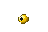

Candidate

Eye of Newt reference

Yellow birdlike variant of Eye of Newt. Standard transparent 48×32 canvas, 11×10 fitted object at (18,14). Native size and 10× pixel zoom.

Built-in imagegen. Generation prompt. Candidate only, not installed.